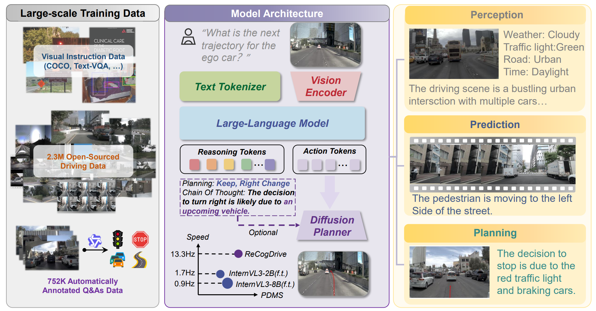
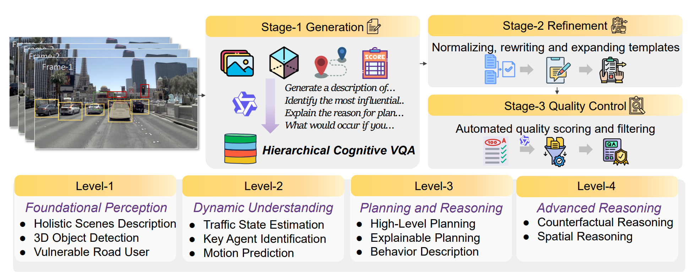
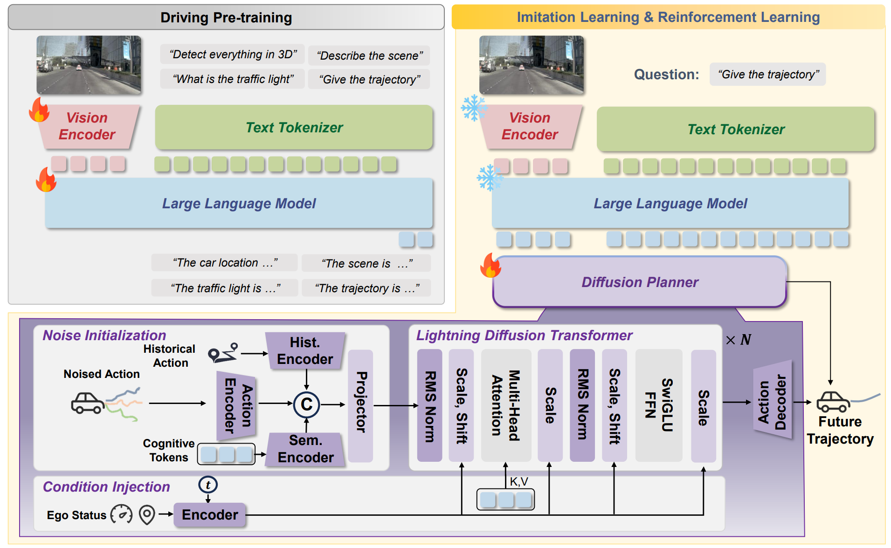
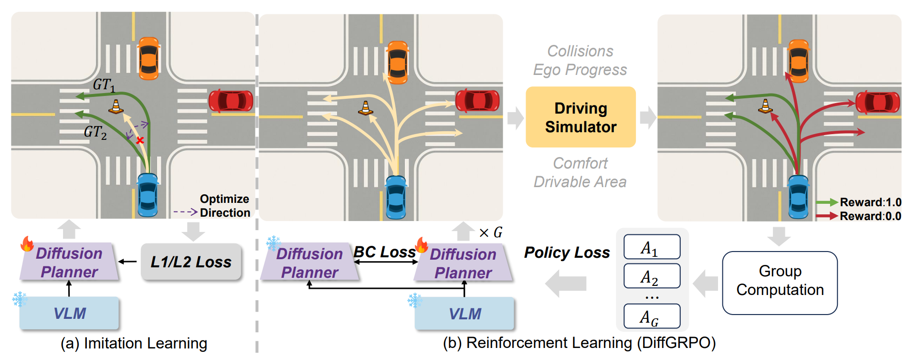
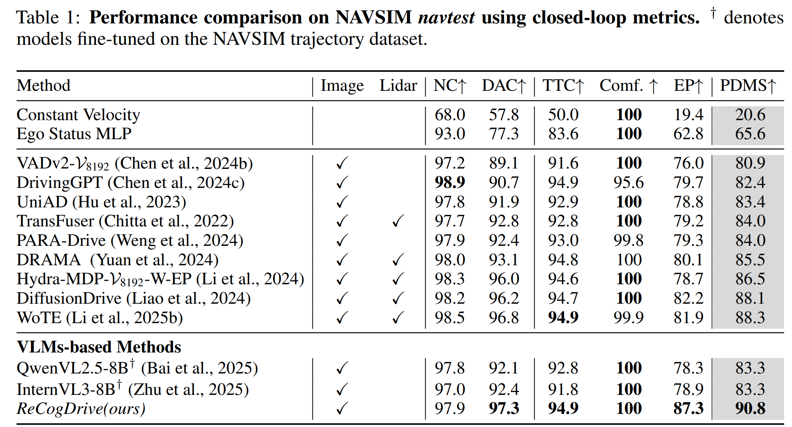
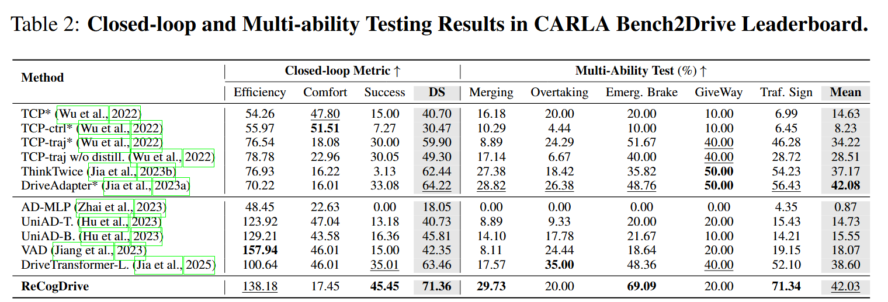
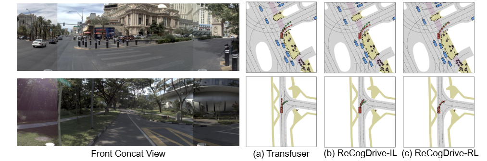

Recent studies have explored leveraging the world knowledge and cognitive capabilities of Vision-Language Models (VLMs) to address the long-tail problem in end-to-end autonomous driving. However, existing methods typically formulate trajectory planning as a language modeling task, where physical actions are output in the language space, potentially leading to issues such as format-violating outputs, infeasible actions, and slow inference speeds. In this paper, we propose ReCogDrive, a novel Reinforced Cognitive framework for end-to-end autonomous Driving, unifying driving understanding and planning by integrating an autoregressive model with a diffusion planner. First, to instill human driving cognition into the VLM, we introduce a hierarchical data pipeline that mimics the sequential cognitive process of human drivers through three stages: generation, refinement, and quality control. Building on this cognitive foundation, we then address the language-action mismatch by injecting the VLM's learned driving priors into a diffusion planner to efficiently generate continuous and stable trajectories. Furthermore, to enhance driving safety and reduce collisions, we introduce a Diffusion Group Relative Policy Optimization (DiffGRPO) stage, reinforcing the planner for enhanced safety and comfort. Extensive experiments on the NAVSIM and Bench2Drive benchmarks demonstrate that ReCogDrive achieves state-of-the-art performance. Additionally, qualitative results across diverse driving scenarios and DriveBench highlight the model's scene comprehension. Code and models are available at https://github.com/xiaomi-research/recogdrive.


To instill human driving cognition into the VLM, we introduce a scalable, structured data pipeline. The pipeline employs a three-stage process of Generation, Refinement, and Quality Control to produce a high-quality dataset that mimics the human cognitive process. At the core of the Generation stage, we create a "Hierarchical Cognitive VQA" corpus, with tasks structured along four levels of cognitive complexity—from Foundational Perception to Advanced Reasoning—to systematically build the model's driving intelligence.

The ReCogDrive architecture synergistically integrates a cognitive Vision-Language Model (VLM) with a generative diffusion planner. Given multi-view images and a driving command, the VLM produces latent cognitive representations that encapsulate its scene understanding. These representations then guide the diffusion planner, which generates a continuous and stable trajectory by iteratively denoising from random noise. The framework is trained via a paradigm designed to systematically address the key challenges in VLM-based driving: (1) To bridge the domain gap, the VLM is first adapted by pre-training on our large-scale, hierarchical QA dataset to instill it with human driving cognition. (2) To resolve the modality mismatch, the diffusion planner is then trained via imitation learning to translate the VLM's cognitive priors into continuous trajectories. (3) Finally, to overcome the limitations of imitation learning, the planner is fine-tuned using our Diffusion Group Relative Policy Optimization (DiffGRPO) algorithm with performance-based rewards, reinforcing the policy for enhanced safety and comfort.

Imitation learning often struggles with multi-modal expert data, leading to unsafe "averaged" trajectories, as shown in (a). To overcome this, we introduce DiffGRPO, a reinforcement learning algorithm that directly optimizes the diffusion planner's generative process. As illustrated in (b), we treat the iterative denoising of a trajectory as a policy rollout. Multiple trajectories are sampled and evaluated in the NAVSIM simulator to obtain a Predictive Driver Model Score (PDMS) as a reward signal. This reward is then used to compute group-standardized advantages, which guide the policy update. By combining this reinforcement objective with a stabilizing behavior cloning loss, DiffGRPO enables the planner to learn safer and more comfortable behaviors by exploring the consequences of its own generative choices, moving beyond the confines of mere imitation.

The above figure presents the performance comparison on the NAVSIM benchmark. ReCogDrive achieves a Predictive Driver Model Score (PDMS) of 90.8, setting a new state-of-the-art. Despite relying solely on camera inputs, it surpasses LiDAR-augmented models such as DiffusionDrive and WoTE by 2.5 and 2.7 PDMS, respectively. Compared to fine-tuned baselines like InternVL3 and QwenVL2.5, ReCogDrive delivers a significant improvement of 7.5 PDMS, demonstrating the effectiveness of our three-stage training framework. It also outperforms the previous best camera-only method, PARA-Drive, by 6.8 PDMS.

The above figure reports closed-loop and multi-ability results on the CARLA Bench2Drive leaderboard. ReCogDrive achieves the highest scenario success rate of 45.45% and the top Driving Score of 71.36, surpassing prior end-to-end baselines. It also excels in safety-critical skills such as emergency braking 69.09% and traffic sign compliance 71.34, while maintaining strong efficiency and a competitive multi-ability mean of 42.03. These results highlight the effectiveness and reliability of our framework in complex urban driving.

We compare ReCogDrive (IL and RL) with Transfuser, where RL yields safer and more reliable trajectories in challenging turning scenarios. More visualizations are in the supplementary material.
@article{li2025recogdrive,
title={ReCogDrive: A Reinforced Cognitive Framework for End-to-End Autonomous Driving},
author={Li, Yongkang and Xiong, Kaixin and Guo, Xiangyu and Li, Fang and Yan, Sixu and Xu, Gangwei and Zhou, Lijun and Chen, Long and Sun, Haiyang and Wang, Bing and others},
journal={arXiv preprint arXiv:2506.08052},
year={2025}
}